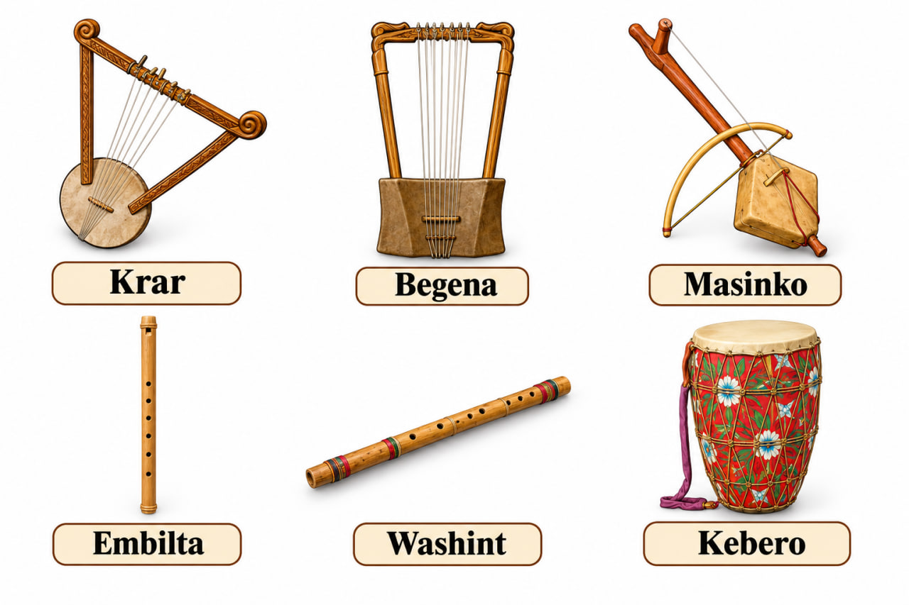

Discover Ethiopian Musical Heritage
Ethiopian music is an important part of the country's cultural heritage. From the gentle sound of a traditional flute to the rhythmic beat of a ceremonial drum, each instrument tells a story and represents a unique musical tradition.
In this website, we explore six traditional Ethiopian musical instruments: Krar, Begena, Masinko, Embilta, Washint, and Kebero. Discover how they are played, what makes each one special, and the role they play in Ethiopian culture.

Explore the Instruments
Every instrument has its own shape, sound, and cultural significance. Choose an instrument below to discover more about its characteristics and musical role.
Want to learn about all six instruments? Visit the Instruments page for more information.
Music, Culture, and Tradition
Traditional Ethiopian musical instruments are closely connected to cultural, religious, and social life. Different instruments are used in different settings, including celebrations, religious ceremonies, and everyday musical performances.
For example, the Begena is associated with religious reflection and spiritual music. The Kebero provides rhythmic accompaniment during religious ceremonies and celebrations. The Masinko is commonly used to accompany traditional singers, while the Washint is often associated with shepherds and traditional melodies.
These instruments represent more than music. They help preserve cultural identity, pass traditions between generations, and connect people to Ethiopia's rich musical heritage.
About This Project
The Sound of Ethiopia is an educational website created to introduce and explore traditional Ethiopian musical instruments. Through this project, I aim to learn about their unique characteristics, understand their cultural importance, and share this knowledge with others.